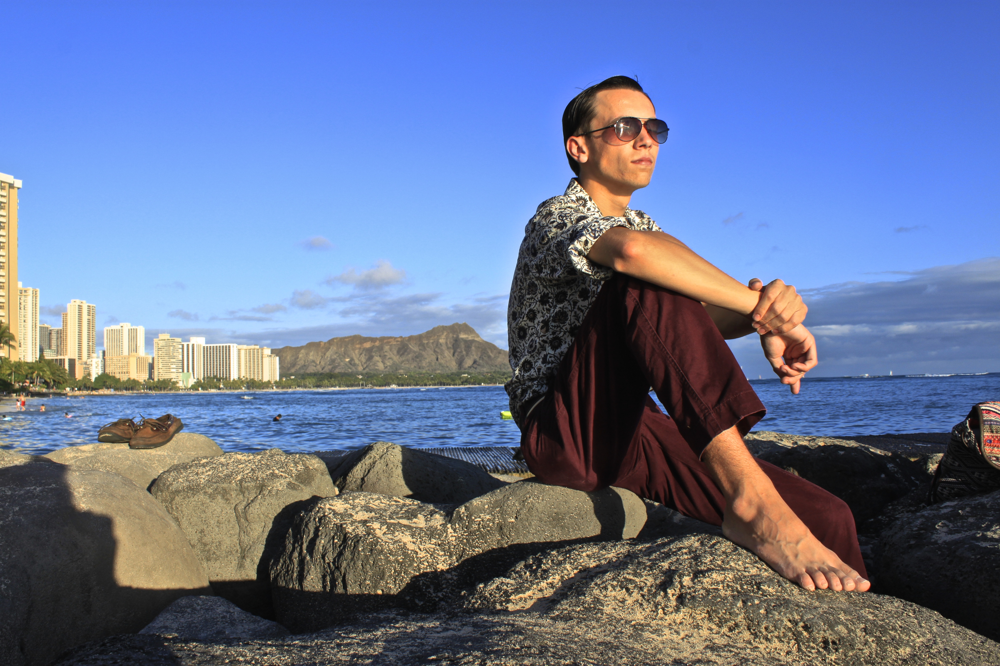

alrus Den
About Me
Who I am
Gabe Corso is currently a student at Dartmouth College. Gabe is working towards a major in Computer Science with a focus on Software Development and a minor in International Relations. At Dartmouth, Gabe is helping to create a full-time community residence that focuses on designing innovative technological solutions for commercial and private use. His strong belief in the benefits of open source development and the power of cooperation have led him to structure his personal ventures in a similar fashion.
Besides academics, Gabe is a passionate musician and humanist who values a good story and a great cup of coffee. If you would like to grab a cup with me, just head over to the Contact page!
Contact Me!Some history
Before moving up to the New England area, he lived a tropical life in-between southwest Florida and Oahu, Hawaii.
Constant moving back and forth between the two states through my life into turmoil. Thankfully the long lasting effects of those early upsets have molded me into the person I am today and have allowed me to adjust to change and failure quickly.
All throughout my young life I yearned for the chance to travel the world and meet beautiful people, leaving the grass a little greener when I walk away. Thanks to Dartmouth College and generous supporters I have been able to realize those goals now that I am on my own.